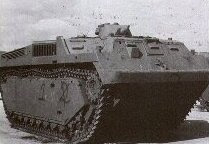
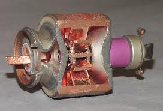

{kind=link}
Wolverines
"These files are no good without the G-men who compiled them." -- Michael Collins.
With one exception, when the raid parties of Operation Clean Sweep descended upon the homes of the Wolverines which were scattered across seven counties in lower Michigan, they came up empty. The unfortunate exception for all concerned was Tommy Brno, who was too sick to "get out of Dodge."
The warning had come late in the afternoon the previous day with a tip from an anonymous source within the Michigan State Police, a mysterious benefactor who worked in the Michigan Intelligence Operations Center in Lansing and had proven absolutely reliable in the past.
Recovering at home from a back surgery the previous week at the VA, Tommy was pretty much bed-ridden and in no condition to hump a rifle and bandoleer let alone a rucksack. His CO had urged him to check back into the hospital where at least there would be witnesses to his arrest but Tommy wasn't thinking very clearly thanks to the stiff pain medication he was taking. To be sure, he sent his family away into hiding as they had long planned against this day but Tommy decided to wait until morning when a friend from work would take him back to the VA.
He never made it.
Just before dawn, the Joint Task Force raid party shot Tommy's dogs and broke into the house from front, side and back. Tommy was ready for them in the back bedroom with his Springfield Armory M1A battle rifle.
Final score for the Feds: They killed three dogs and made a widow out of Sally Brno, leaving her with two darling little girls to raise without a father.
Final score for Wolverine Sergeant Thomas Paul Brno, Marine Corps veteran of two tours of Iraq and one of Afghanistan, and holder of two Purple Hearts: One dead ATF agent and two dead Brightfire employees. Three wounded, one of them an ATF agent who would be a quadriplegic for the rest of his miserable life, the result of a 7.62 NATO armor piercing slug coming through a two-by-four, glancing slightly off a nail then rocketing through the hallway drywall, glancing again off the top of the SAPI plate in his body armor and entering the front of his neck, severing the cervical spine. Bullets do funny things sometimes. This was one of them, not that the ATF agent was laughing.
As he died, Tommy heard the high pitched screaming of the wounded and considered it a good trade. Not that the Feds and their minions had given him any choice.
Sally Brno wouldn't learn about her husband's death until word made it to the Ontario, Canada, safehouse that she shared with two other Wolverine families. As her twin girls had just turned three, Sally decided to withhold the news as long as she could.
Operation Clean Sweep was supposed to be about "assault weapons" but it wasn't, not really. All semi-auto rifles were to be surrendered, yes. But the administration didn't really care about those in the hands of people who had buried them and had no intention of fighting the Federal raiders. A buried firearm never killed anybody.
What the Feds WERE interested in were those rifles in the hands of armed citizens who were trained, organized and had every intention of resistance to the Federal tyranny. Oh, the Feds would get around to the others, the Elmer Fudds, sooner or later, but first they had to put down the mad dogs," as Stanley Silverthorn, the FBI senior executive who actually controlled the operations of the MIOC and the Joint Task Forces in Michigan called them.
At the top of the Feds' list of "mad dogs" in Michigan were the Wolverines. And now the "mad dogs" had slipped through the Feds' net, leaving not even a single innocent family member who could be arrested to encourage the husband's or father's own surrender. The raid parties had captured some ammunition stocks that the Wolverine members hadn't had the foresight to cache, but that was nothing. Silverthorn's bosses had wanted any potential shooters and Silverthorn had failed them. Thus the MIOC's boss was not pleased and neither was his boss in the District of Criminals, as some Wolverines referred to the nation's capitol. After being royally chewed out for the failure of the raids, Silverthorn promised his boss, "We'll hunt them down."
He wouldn't have to. Although Stanley Silverthorn could not know it, the remaining Wolverines were at that moment hunting him. This eventuality had never occurred to Silverthorn, because at base, he despised "gun nuts," as he thought of them. He viewed them as boobs, rednecks, and throwbacks to an earlier time that was long past. He did not respect them as opponents, and this lack of respect would cost him dearly. The Wolverines were also planning to deal the entire MIOC a blow from which it would never recover.
"The fusion center provides 24-hours a day statewide information sharing among local, state and Federal public safety agencies and private sector organizations in order to facilitate the collection, analysis and dissemination of intelligence relevant to terrorism and public safety.
Mission Statement: The State of Michigan's Intelligence Operations Center shall collect, evaluate, collate and analyze information and intelligence to the proper public safety agencies so that any threat of terrorism or criminal activity will be successfully identified and addressed." -- Michigan Intelligence Operations Center for Homeland Security home webpage.
The Collaborator
John Piasecki pushed back from his work station, letting his head fall back into the chair's headrest. How in the hell, he mused silently, did I ever get myself in this position? I just wanted to be a state cop, not a secret policeman in the American Stazi. It was after midnight in MIOC and no one else on the shift paid the slightest attention to him. He looked up at the old coal miner's helment mounted on a plaque which his fellow MIOC employees had given him last year. "Data Miner, 1st Class" read the legend. Well, he was a computer geek. That's why MIOC snapped him up back in 2006. I was almost five years after September 11, and he had figured when they recruited him to transfer to MIOC that he would be called to identify Al Quaeda sleeper cells. But Islamo-fascists were really the least of MIOC's concerns. Heck, they didn't even have an Arabic translator until 2009, and that was only after an article in The Michigan Messenger had embarrassed them by pointing out that faux pas.
The truth was that they spied on everybody, but especially focusing on the "radical right wing militia threat." From what John could see (and he knew more about the Michigan militia groups than their own mothers did) they weren't much of a clear and present danger to anyone. Most of them were training -- those that were training -- with an eye to resist gun confiscation if it ever happened. Leave their guns alone and they'll leave you alone, John figured. Wasn't that what the Second Amendment was all about? Until the Battle of Sipsey Street and the passage of the Operation Clean Sweep legislation, any conflict had been unlikely. Now it was here, and the Feds were using the Michigan State Police, MIOC and every other law enforcement agency that they could bend to their will as cat's paws to enforce it. The fact that the various Michigan militia formations hadn't blown up a thing, hadn't flown airplanes into buildings, or killed their fellow American citizens did not seem to matter. Both the state and federal administrations were run by Democrats and they didn't fear the Jihadis. They feared American firearm owners.
To that end, his superiors were always thumping the tub of "collaboration" between desks, between agencies, up and down the chain. "We must be seamless," they said, "We must all know what everyone else knows." (Although, John found that the Feds often didn't share what they knew DOWN the food chain and did not practice what they preached.) Well, he had "collaborated" all right, but he had a feeling that he was the sort of "collaborator" that the resistance movements of Europe had executed whenever they got their hands on them. But to his bosses, it was the armed citizenry of their own country they feared, whether they had actually broken the law or not.
"Remember," the college professor who was in charge of the Intelligence Program at Michigan State University, was fond of saying, "The absence of evidence is not the absence of a threat." "What is more important," the professor would ask at MIOC training sessions, "protecting an American community from a terrorist attack or protecting individual civil rights?" And he would add, "Sometimes the 'legal way' may not seem like the 'right way." "The most fundamental principle of ethical behavior is 'Do No Harm'" but, he added, "one of the problems is the definition of 'harm" and "it is often based on one's perspective and personal philosophy of what is important."
You could drive a truck through that gray area, Piasecki thought at the time, and now, in the aftermath of the Battle of Sipsey Street, the Feds were driving long convoys through it daily. It wasn't like the professor was just some university moke. He had written the book, literally, on police intelligence operations. A copy of it was on John Piasecki's bookshelf at home. The professor was the go-to intellectual when it came to operating "fusion Centers" like MIOC and the most prominent advocate of what was called "Intelligence-led Policing."
Intelligence-led policing (ILP) is a policing model that has emerged in recent years which is "built around risk assessment and risk management." Although there is no universally accepted understanding of what intelligence-led policing entails, the leading definition is "a strategic, future-oriented and targeted approach to crime control, focusing upon the identification, analysis and 'management' of persisting or developing 'problems' or 'risks.'" In simpler terms, "it is a model of policing in which intelligence serves as a guide to operations, rather than the reverse. " . . . Mark Reibling's 1994 book Wedge -The Secret War Between the FBI and CIA spotlighted the conflict between law enforcement and intelligence, and urged cops to become "more like spies." Intelligence-led policing gained considerable momentum globally following the September 11 terrorist attacks . . .
Intelligence-led policing is still in its early stages and therefore lacks a universal conceptual framework that can be applied to disparate contexts as the new policing paradigm. Implementation can be difficult, because it requires police managers to "have faith in the intelligence process and in the judgments and recommendations of their intelligence staff."
Some have also questioned whether the foundational ingredient -- intelligence -- has been properly considered, given that: police and security professionals already have to contend with "information overload" from the huge data banks that have been built up in the intelligence process; and increasing raw data is not the same as generating "knowledge" or actionable intelligence.
Finally, intelligence-led policing is part of a larger trend of blurring the distinctions between national security and domestic policing, or the state's military and police functions, and risks the same perils that have tarnished policing in the past, such as political interference, violating civil liberties, and a greater potential for the abuse of police power with the increased secrecy that intelligence work entails. -- Wikipedia.
After years on the inside the thing that struck John most forcefully was the degree to which the Feds had co-opted, through fusion centers and Joint Task Forces, the entire gamut of police agencies throughout the country to dance to their tune and pay for the fiddler. Even now after Michiganders had replaced a liberal Democrat with a liberal GOP governor from Ann Arbor, the Feds still pulled MIOC's strings and the Justice Department was the chief beneficiary of MIOC's work product in its campaign against liberty-minded citizens who insisted mostly just upon being left alone.
This wasn't true in all states, of course. In Alabama, the feds assigned to the fusion center in Montgomery were isolated, ignored and often insulted in a hundred tiny ways. As the competent state and local guys they had worked with before Sipsey Street disappeared from the "official" fusion center into the parallel operation run by Jack Durer and his proteges, they were replaced by counter-intelligence experts who wined, dined and otherwise worked on the Fibbies and tried to flip them into assets loyal to the state and not the federal administration -- and if Durer's boys couldn't get their assistance, they were often successful in obtaining their silent neutrality. As bureaucrats, the Fibbies were experienced at compliant incompetence. They could not be fired, especially now when their numbers were so reduced by casualties and desertions, for there was no one to replace them. Much of the working days of these agents was taken up with finding new and inventive ways to explain to their DC bosses how and why they could not do their jobs or answer the increasingly demanding questions headquarters asked of them.
The only intelligence from Alabama that the Hoover Building believed these days came from a few of their own agents and confidential informants. They did not know that Jack Durer controlled almost half of those. So when it came to the fusion center and joint task forces, Alabama more than held its own by systematically recovering and then maintaining its traditional independence as the Founders had intended all along.
But Michigan?
Since before the inception of the Michigan MIOC, the state police had been a lap dog of the federal leviathan. Now it was even worse, as far as John Piasecki could see.
Between the fusion centers and the joint task forces, the Feds had taken control of almost all law enforcement agencies and now was using them to carry out diktats that bore no relation to the Founders' idea of a constitutional republic of limited powers and distinct roles for each level of government that he had learned at Hillsdale College.
John's father had come from Poland and by a miracle, Peter Piasecki had made it out of the old country when he was a boy, immediately after World War II. Settling in Hamtramck, a Polish enclave in Detroit, and getting a job in the auto industry, Peter Piasecki married an American girl and had worked all his life to earn the money to send John to Hillsdale. Along the way, he proudly told his growing son of their Polish ancestors, relating the stories of Polish resistance to the Tatars, the Swedes, the Teutonic Knights, the Muslims at the gates of Vienna, then the Russians, the Nazis and the Soviets. "Eleven times our village was wiped out over the centuries," Peter exclaimed, "and twelve times we build it back again. My father told me that a Pole is a free man born with a brick in one hand and a sword or a gun in the other. You remember that, Jan. You are an American, but you always remember where you come from." John swore to his father that we would, and he had.
Which was why the ghost of Peter Piasecki had haunted John's sleep. This was wrong. This was all wrong. He was an American law enforcement officer sworn to preserve, protect and defend the Constitution against all enemies foreign and domestic. So why did he awake dreaming he was persecuting his father while dressed in the uniform of the Polish Communist secret police?
He hadn't had that dream since he decided to help the Wolverines.
The Wolverines were special. John, who had studied all sorts of groups and their dynamics was impressed by he had learned. The names didn't matter. Heck, the Wolverines didn't even go by that name, but rather one that John had assigned them. Michigan after all was the Wolverine State, and wolverines, as they teach every school child, are fiercely independent critters who are afraid of nothing and it is best for everyone to leave them the hell alone. So, no, they may not call themselves "Wolverines," but wolverines they were. They didn't even call themselves a "militia" but rather they were a private association of individuals who took their collective duty as armed citizens seriously. They were certainly "well regulated." Their leader was ex-military, as were many of the officers and NCOs, but not exclusively so. They were picky. They did not advertise, they did not even recruit per se, but rather accepted people who were referred by existing members, and only on trial. If they didn't make the cut, which was always applied by the stern yardstick of hard training, then they weren't accepted. Period. Even so, there were many more volunteers than ever made the grade and that was just how the Wolverines liked it. As a result, they had a unit of armed citizens that was rougher, tougher and deadlier than any other bunch of folks who called themselves "militia" in the state. They were supremely law abiding, responsible citizens and had remained so until the Feds had given them no alternative.
Now they were outlaws, on the run, but John knew that if the Constitution no longer protected them, then it no longer protected their persecutors either. After the death of Tommy Brno, John Piasecki knew that God might pity some of the men and women who called the shots in the MIOC office and on the Joint Task Force, but the Wolverines would not.
Once he determined to help the Wolverines, it hadn't been that difficult to figure out a dead drop that coincided with both his and the Wolverine CO's daily patterns. It must have surprising, finding that first message, chosen because its contents were easily verifiable. It must also have been frustrating for the CO that he couldn't know who his secret benefactor was at MIOC. But after the events of the last week, John figured, the CO had to have grasped that his entire unit, including himself, owed their lives to Piasecki, although they would never learn his name.
There was no time to risk the dead drop method when John had learned of the kick-off of Operation Clean Sweep in Michigan. He had arranged in previous messages a simple code for various scenarios using the tones of a telephone key pad -- different pulses, number of strokes, and spacing. He made the call to the CO's cell using a throw-away cell phone. He made the call, heard the CO answer, gave the pulse message and waited. There was a sharp intake of breath, and then a fervent, "Oh, shit." John waited. The CO said nothing, asked nothing -- not that John would have contributed his voiceprint to the electronic mix to answer it if he had.
He knew what was going to happen next, for he had given the CO the building schematics and security information for MIOC on a thumb drive only two weeks before. For if the plans of the Feds were to be frustrated in Michigan, the MIOC -- as an institution and at least some of its people -- would have to die. John Piasecki had just pointed a very dangerous weapon, the Wolverines, at his own head. Good thing I never married, John told himself silently. At least Pop would be proud. Hell, he's probably singing the Polish National Anthem in Heaven right now.
Wings, a Water Buffalo and Barbequed Database
The CO looked around the room at the faces in the rural safe house outside of Jackson. Some met his gaze, others studied the maps, aerial photos, blueprints and security schedules on the table before them. The commander of A Detachment grunted and observed for the fifth time, "Tough nut." The others nodded. "The street side is so hardened that I don't see how we can even get close. The target is a five story building overlooked by a fifteen story building. And the river side has iron fencing around the parking lot in the back, topped by new razor wire. There are cameras and sensors. No way we're sneaking through that. Hell, you'd need a tank to get through the river-side obstacles, and if you've got a tank, you might as well come up Grand Avenue, only we haven't got a tank."
"Gotta be at night," pointed out B Detachment's First Sergeant. "The place is too packed with cops, Feds and secretaries during the day. The whole block would end up looking like the final scene of The Wild Bunch, with us dead center."
Nobody laughed.
"You know, we COULD go find us a homeless suicide bomber," offered Corporal Grimes, the resident comic of A Detachment.
Everybody laughed at that one, except the CO, who merely gave a glimmer, a rumor, of a smile.
"No Oklahoma City in Lansing," he said gruffly. "Detroit is going to be messy enough, even if everything works right." There was another MIOC in the Motor City that would have to be taken out simultaneously. They all understood how that was going to go down. "Also, the point of this mission is to demonstrate that we are more than just a couple of bomb-making farts.. . We get to prove that we are American soldiers not terrorists."
"And Marines," Grimes piped up. Grimes was proud to be a Devil Dog on vacation.
The CO just gave him a withering look, and then took his Randall combat knife out of its sheath and closely inspected the edge with his thumb, very slowly and VERY carefully.
Grimes folded instantly. "Yessir," he said nervously.
Everyone held their breath until the CO re-sheathed the Randall.
The CO had never gutted anybody that his troops actually knew, but they were all convinced that it had happened sometime, somewhere, to somebody. They were also convinced of two other things. They knew that he was capable of it and they also knew that when it finally happened, they most especially did not want it to happen to THEM.
"If the building has to be swept out of people, we'll have to do it from the top down," said the commander of B Detachment, Bravo Six, worriedly. "That means we have to get to the top and work our way down. That's gonna take a lot of time. TOO much time."
The CO smiled. "Actually," he said, "that's the one part I know how we're going to do it."
"Sir?" said Bravo Six.
"You have several men who are experienced jumpers, right?"
"Yessir!" said Bravo Six, working out instantly what the CO had in mind.
"So, you've got, what, at least six guys who are good enough with a directional 'chute to land on top of that building, don't you?"
"Sir, we lost Brno, remember?" said Bravo Six sadly.
The CO's face softened. "Yes, Bravo, I remember."
The CO turned to Alpha Six. "Bill, you're in touch with Pelican aren't you?" They called the ex-Air Force para-rescue jumper Pelican because he was fond of the gun case he kept his FN FAL in. "I'm certain he can do the job."
"Yessir," agreed Alpha Six, "he'd love to do it."
"Right. Well he's seconded to Bravo for the jump. Make the introductions as soon as possible consistent with security."
"Yessir."
Alpha Six immediately saw some flaws. "Sir, two things. One, the building is overlooked by the larger state-owned office building, so the approach angles are limited. I suggest we come in from the river side. Compared to the 15 story building, it is nice and wide and doesn't have many antennas. But, sir, anybody in one of the south-side offices will be looking right down on the tops of our chutes. And second, we won't be able to parachute the device onto the roof."
"No, Alpha, we won't."
A random thought occurred to the CO, something that bounced off what Alpha Six had said earlier. He fixed his gimlet eye on the A Detachment commander.
"Alpha, you said we'd need a tank to get through on the river side, right?"
"Yessir, but . . ."
"What if I can get you a tank that SWIMS?"
"Sir?" Alpha Six was perplexed. "Is that possible? I mean, for us?"
'Yes," said the CO confidently, "it is. But we'd have to steal it without getting noticed, put it on a lowboy, truck it halfway across the state and get it into the river upstream without being noticed. We'll also need to steal some Zodiac boats for the exfil, unless one of you lunatics knows where we can just borrow some."
"Hell, sir," said Grimes, "that sounds EASY!"
Dolefully, Bravo's pessimistic First Sergeant, asked, "Which part?"
This time everybody laughed, including the CO.
Bravo Six still sounded worried. "Sir, we'll still be seen, both on the river and in the air. Even at night, Lansing's a CITY. We'll all be lit up like a bunch of visiting Amish on the Las Vegas strip."
"No, Bravo Six, we won't." The plan now gelled in his head, the operations order half formed. When he told them what he had in mind, these desperate men, separated from their families, on the run from the mighty power of their own government, began to grin.
Grimes couldn't resist. "Sir, to quote Kraut Mueller's grandpa, 'Well shit and shove me in it.'"
There was little military decorum in the room for a good two minutes, until the CO brought the hilarity to a close and began issuing orders.
NIGHT JUMP.
{kind=link}
. . . .
In the end, the phase of the moon called the timing. That and the weather. It had to be at night. The city had to be darkened so they would not be seen by the OPFOR yet without artificial lighting the jumpers would not be able to see the drop zone, a mere postage stamp on the top of a five story building with some antennas and other structures jutting everywhere. No sane man would do it, but then the Wolverines were never noted for their caution. They could not get access to the building to place a pathfinder marker of any kind. So, it had to be done on a cloudless night with just a sliver of moon, enough so that they could see, but not be easily spotted.
A week and a half later, the astronomy lined up with the weatherman. The moon would be a little less than optimal, but it was doable. The wind was not still, but the volunteers insisted they could do it.
The plane for the jumpers, borrowed from a private skydiving club, was fueled and ready. The Detroit operation was on the runway some forty miles away, and Charlie Detachment, a section of the Wolverines that had always trained alone, clandestinely, was needed in both Lansing and Detroit, had split up into small groups of two or three, some with tasks to perform in a certain utility installation, others with more personal and private errands. The plan was complex. Anything could go wrong, and the CO was aware that most often something did. "No plan survives contact with the enemy." He knew that from a lifetime of personal experience.
Still, with luck it should work, It had to work. Looking to the heavens, the CO, said aloud, softly, "Did you hear that, Lord? Please be with my boys this night." But the miracle that would make it all work, if it worked at all, sat in two parts under a tarp right in front of him. One part was the package. The other was the delivery vehicle.
The CO thanked his lucky stars that one weekend a few years back, he had gone to a World War II re-enactment over on the shore of Lake Michigan. There, he had seen up close something that was a relic from a by-gone era. The members of the Great Lakes Military Vehicle Collectors Association loved to show off their jeeps, trucks and tanks from World War II. Early in his military service, the CO had seen some of the wheeled vehicles still in use, and the obsolete armored stuff in museums. But the one thing that drew his attention that balmy spring day near Grand Haven was an LVT-3C "Water Buffalo."
 LVT-3C "Water Buffalo"
{kind=link}
Designed by Donald Roebling, and built initially at the Food Machinery Corporation factory in Dunedin, Florida, the LVTs were amphibious vehicles used by the U.S. Navy, Marines and Army in the Pacific for getting troops to beaches, supplying them once they were ashore, and even in Europe for river crossings. Although early models were just mechanized, open tubs, the LVTs were later modified with top machine gun mounts and artillery turrets. The engines were moved to the side sponsons, to allow greater cargo space in the center and ramps were fitted so troops could exit quickly without having to heave themselves over the side. The version sitting before him was an LVT 3 that had been built by Borg Warner and later modified by the Marine Corps in 1949, fitted with both an armored roof and an extended bow for better buoyancy, not that any of the "purists" at the re-enactment would have noticed. But the CO noticed, asked some questions, talked the owner into taking it back out on the water, paid attention to how the controls operated -- he was fascinated. Afterward, he got a business card from the owner, a rich guy who had made his money in auto parts (well, actually it was his father who had made the money in auto parts and the son was still comfortably living on it). The fellow had invited the CO to come see his collection at his farm on the way home after loading the LVT on a old U.S. military low-boy and entrusting his employee-driver to get it home.
When they arrived at the farm estate, there, packed into a large, modern, climate-controlled steel building stood row on row of Shermans of different types, Stuart, Chaffe and Walker light tanks, M8 and M20 armored cars, even an M18 Hellcat tank destroyer, along with jeeps and trucks of various kinds. The CO, quite frankly, was like a kid in a candy shop. But where was the Water Buffalo? he asked. They had stopped for lunch and the trailer should have gotten here ahead of them.
"Oh, I keep that down at the lake I own south of here, and I take it out every Fourth of July for friends. I've got a DUKW there, too. Its a blast to go boating at the controls of a Water Buffalo."
Looking at the LVT now, in front of him, on the old factory landing upstream five miles from the target, the CO recalled the short jaunt on Lake Michigan and reflected that he was about to find out how much of a blast it really was. He hoped the owner would forgive him for what he was about to do with his prized possession, but he doubted it. There are no obsolete weapons, Kraut Mueller was fond of saying, only obsolete tactics. Here was an "obsolete" weapon system, built in 1944 for a world war whose veterans were busily dying off. And once more it was going to war, this time against the same government that had it built in the first place.
H-Hour 0215
A minute and half after leaving the plane, Bravo Detachment's jumpers -- three ex-military and three experienced sport skydivers -- saw the lights on the building's roof and everything else below them instantly swallowed in darkness. Contrary to what most people think, it is rather difficult to deliberately cause a major power outage, with all the sensors, alarms and redundancies the power companies usually build in. Fortunately, there was a private in C Detachment who had worked for Pacific Gas and Electric out in California for several years before moving back to Michigan after a divorce to stay with his dying mother. All he needed was some infrastructure information, a few tools, an unconscious security guard and, voila, most of Lansing was darker than the inside of a hairy dog. As their eyes adjusted, the Bravo jumpers could make out the faint sheen of the river, and used that to adjust their course to the roof. Then the emergency generators came on in the building and the DZ was visible once again. Pelican, a sport jumper who had more hours in the silk than the rest put together came down first, legs running, and silently collapsed his chute. It was perfect, until Carl, the leader of this short squad, landed right on top of him and broke Pelican's left collarbone. One by one three more Wolverines landed without killing themselves or anybody else, although the usable space on the roof was almost gone. Rigoletti, came in last, circling, looping trying to get in between the antenna structures and snagged on a tower, whipping him around and depositing him hanging feet down, but over the lip of the roof, suspended with nothing between him and the entrance of the building many stories below but his harness.
"Oh, shit," Rigoletti prayed. He could see the new guard shack on the street below, the concrete traffic barriers. In the soft glow of the emergency lighting he could see the two Brightfire security guards standing outside the small building, listening to the ululating wail of vehicle emergency sirens, looking up and down Grand Avenue, but fortunately not looking UP. Pelican, cradling his left arm, looked over the side, making a slight noise. Rigoletti extended his closed fist -- FREEZE. Then, seeing that he had Pelican's attention, he pointed below with an extended right hand to the guards. About that time, Carl looked over beside Pelican, whispering, "What the fu . . ." Pelican threw his good hand over Carl's mouth. In a very low voice next to the team leader's ear, he said "Quiet."
Whispering, especially using words with "s" sounds, is almost always louder and more easily heard than talking in low tones. Carl knew this, he'd just forgotten.
Pelican looked back at Rigoletti, down the guards and then back at Carl's face. Softly he said, "Wait here." Pelican walked over to the other team members, shucking out of their chutes, rearranging their gear and quieted them as well with hand signals. Moving over to one of the access doors, he found what he was looking for: a brick that some smoker had brought up here to prop the door open when he came out on the roof to smoke. Picking it up, he walked across the roof to the right rear corner of the building. Sizing up the pavement below, he chucked the brick with his good hand as far as he could, aiming for the concrete walkway around the building. Before it hit, Pelican was on his way back to Rigoletti, collecting the other team members on the way.
The brick hit hard with a loud crack, and Rigoletti watched as both guards jumped, doped out the direction of the sound, and started to move around the building to where the missile had landed. Now, trained personnel, having no immediate backup, would not both venture out of sight of their duty post. But it was dark, they were both new to the job and their training hadn't been all that it could have been. No traffic moved on Grand, the city was dark, the noise was loud and both men were scared at what might be around the corner toward the river. There was, of course, an entrance security detail within the building and another roving pair who moved between floors, checking locks and so on. Startled, the guards instinctively huddled for support, and realizing that SOMEONE had to check it out, they covered each other as they moved away from the front of the building. .
When they disappeared around the corner, Carl and the other three team members pulled Rigoletti up and back from the ledge. Other than having about five years scared off of his life, he was unharmed, although why he hadn't crapped his pants was a mystery. Still, the result was better than the contingency plan in case the roof was untenable. Then the six men would have descended to the parking lot, killed the alerted guards outside and fought their way in the front as a diversion while the river team came in the back. Nobody was dead. So far so good. Rigoletti, a locksmith in real life, started to work on the door leading below into the building.
On the river, the LVT -- filled with fourteen men of Alpha Detachment and the CO in the driver's seat -- drifted downstream with the current, its engines off. Astern of them about three hundred yards, four Zodiac boats, daisy chained to a fifth whose outboard muffled by a "Quiet Box" was muttering lowly, were tagging along, going just slightly faster than the current.
Alpha Six perched on top of the Water Buffalo, like the CO looking through an AN/PVS-14 night vision monocular, watching the banks. They were at the mercy of the current in the center of the channel now, not wanting to start the deafening radial engines until they had to crawl up the bank and over the fences and wall obstacles. The building was in sight, two hundred meters downriver.
The two guards, moving slowly out of caution, rounded the rear corner on the river side, missing the brick which had bounced off into the shrubbery. Puzzled, finding nothing in the beams of their Kel-lights, they continued their sweep across the back of the building intending to complete a full circuit back at the guard shack. From the LVT, Alpha Six looked up toward the roof of the building. There, hanging over the edge on a string, was an infrared cyalume stick, indicating that the jumpers were down successfully, ready to begin their sweep from the top. Invisible to the naked eye, it showed up like a small spotlight in the night vision monocular.
Alpha Six hand signaled below, and the message was passed to the CO: Airborne element in successfully. No radios would be used unless the mission went south.
One hundred meters to go and the LVT, caught in some undercurrent, began to twist about, the bow beginning to point at the opposite bank from the one they needed.
The Bravo airborne element was through the roof door and descending the stairs to the top floor.
The CO started the LVT with a roar, revved the engines and slewed around, headed now toward the bank near the bridge pilings which provided the best angle of attack up and out of the river.
The security guards, almost back out to the shack in front, heard the roar and clanking behind them as the Water Buffalo hit the riverbank side walk and picked up speed as it closed with the steel security fence. The noise also attracted the the interior first floor guards, three in number, who ran to the back glass doors to see what was happening. Two of the men thought it might be an auto wreck on the bridge. The other thought it was a boat disaster on the river. It was a disaster all right, and it headed straight at them. When the LVT hit the fence, it begand to climb it until the forward inertia and weight snapped the fence anchors, which were meant to stop anything up to a modern automobile but not a 17 ton amphibious tractor. The exterior guards came around the corner again, took one look at armored death coming, they thought, straight at them and turned and ran like the furies of Hell were on their tails. The LVT ignored them, pivoted slightly to the right and made for the glass doors. After the steel fence, the glass door frame was nothing, and the LVT drove straight into the building, the interior guards fleeing out the front door and and endeavoring mightily to catch their companions as they raced north down Grand Avenue.
Bravo element finished clearing the fifth floor and, two flex-cuffed janitors in tow, descended to four.
The roving guard team, also on four, were racing to the elevator (against their own quick reaction training, for they had been warning to take the stairs in an emergency) had their backs to Bravo, when Rigoletti and Carl emerged from the stairs and called on them to drop their weapons of die. It was just a job to them, so they naturally just dropped their weapons. Flex-cuffed, they joined the janitors.
There was nobody on three.
The ramp dropped on the LVT in the lobby and Alpha Six emerged, leading nine men, two of whom pealed off and raced for the stairwell at the other end of the building and four of whom were burdened by pushing and pulling a bulky box on a rolling pallet jack. Four others emerged to take up security positions on the first floor.
If you wish to create an electro-magnetic pulse large enough to endarken a country, it needs to be generated by a megaton-range nuclear bomb high in the atmosphere. If you wish to create one big enough to wipe out a delicate electronic infrastructure in a single building, it can be non-nuclear and much smaller, but you have to get it right next to the computers, drives and data you wish to expunge. Kraut Mueller had quietly circulated plans for a unit a little bigger than a residential outdoor heat pump which could be charged for a few days prior to use. You could haul it around in a small pickup truck. You could put it on a pallet jack. This was what the Wolverines called "the device."
The operational guts of MIOC were in the basement. The device in the box was supposed to be delivered as close as possible to operations center's computer equipment. The pallet jack was dragged to the stairs, the box slid off the jack, through the door and helped by gravity, slid down the stairs to the landing, then slid down again until it was just outside the basement entrance to MIOC. The four man assault team, led by Alpha Six had preceded them with C-4 charges ready to blow the basement door. It was not necessary, for at that moment a MIOC employee who had paid attention to the emergency action drills opened the door from the inside to go upstairs to find out what the hell was going on. In a smooth motion, Alpha Six flung him to the side, wedged his own combat boot between the door and the jamb and whipped a tear gas grenade into the room through the crack. Small arms ricocheted off the door harmlessly. Five more CS grenades were flung in the door by Alphas who now had their M40 gas masks on. When Alpha Six, donning his own mask, looked back at the employee he had flung aside, he was curled up and retching on the floor, his face against the tile, splashed in his own vomit. The device handlers shoved and kicked him roughly farther back into the stair landing so they could position it to enter the MIOC door. He gave no resistance.
Three more janitors were corralled on two and forced down the stairs toward the ground floor.
MIOC employees fleeing the CS were bolting up the far stairwell when the two men assigned to it, fired a burst into the wall that ricocheted wildly and then called on the choking MIOCs to drop their sidearms and come on up, one at a time with their hands on their heads. They came up and were hustled out of the building, told to run and keep on running. The same thing happened to the captives from the upper floors.
Lansing police cars began to arrive out front, beginning to work that old familiar "establish a perimeter" magic.
From both ends, the Alphas began to clear the basement offices of the MIOC. They captured three unarmed holdouts and killed two armed men who elected not to surrender. Both were FBI agents. The unarmed were hustled up and out. The device, once again on the pallet jack which had been manhandled clattering down the stairs, was trundled to the center of the computer area. The Wolverine bomb technician checked it one last time. The EMP generator's capacitors were full. Yelling "Fire in the hole!" through his mask's voicemitter, the electronic sapper set the time delay and cleared up to the first floor, following the rest of the team.
The teams, Alpha and Bravo, gathered at a rear exit, ready for their run down to the riverbank and the waiting Zodiac boats.
In the LVT, the CO drove through the front doors so that the Water Buffalo was just sticking out of the building. rear ramp still down inside the lobby and clambered up into the weapons turret on top. He had one final surprise for the Lansing cops outside.
You see, the thing that the LVT's original owner was most proud of was the armament he had chosen to put in the restored armored amphib. The laws of the United States were onerous where automatic weapons were concerned and that meant the original .50 caliber Browning heavy machine gun which had once graced the turret after its 1949 rebuild. To buy one was quite expensive -- not that he couldn't afford it, mind you, but really, he just wasn't into firearms as much as he was into armor -- and besides who needed the ATF crawling up your butt with a microscope?
So he had replaced the mount where the Ma Deuce had been with a flame thrower. Oddly enough, there are no restrictive laws against flame throwers, whether man-portable or vehicle mounted. They are not firearms and there are no licenses or permits required to own or use one. When the inheritor of the auto parts fortune celebrated his Fourth of July, he did so at night with gas-propelled jets of burning napalm on his own private lake. Now the CO jumped up into the flame gunner's seat and sprayed a burning arc outward toward the cars outside. He caught three with the burning juice, two of which ended up incinerated, the drivers running for their lives.
A crescendo of impotent small arms fire hit the front of LVT. The CO did not care, for he had run out the back ramp and joined his men in their mad dash down the river bank and the waiting boats.
Zodiac Boat.
{kind=link}
The CO had chosen Zodiacs instead of more easily obtainable pleasure boats was that most modern boats were too electronically sophisticated with electronic ignitions and fuel pumps to risk being put out of action by the EMP device. Jumping into dead boats that they would have to paddle with their battle rifles would been embarrassing to say the least. The Zodiacs were fitted with pull-rope outboards, each tooped with a "Quiet Box" so they could make way without a lot of noise.
Also, regardless of the noise, he didn't want just one boat for all these men, but several, so they could split up if necessary. They needed to be fast if necessary and they needed to be able to carry a load of armed men and equipment. But more than that, they needed to be hard to spot at night -- dark in color and low in the later -- and quiet at slow speeds. Zodiacs were the only type of boat that fit the bill. They also had the advantage that each had an assigned boat handler familiar with the type from prior military service or just skunking around on Michigan's lakes.
Three of the Zodiacs packed with Wolverines were already past the bridge in their flight and one more had just shoved off into the river current when the CO did a forward leap into the last one as it was leaving at bank. He landed on the luckless Grimes, who began cussing a blue streak until he saw his assailant.
"Uh, s-sorry, sir," stammered the unit smartass.
The CO, his lungs heaving and his gut churning, still gasping for breath from his sprint, just grinned.
 One type of EMP magnetron.
{kind=link}
Behind them, the EMP device went off without a boom, just a click, a crackle and a silent pulse, destroying every computer, hard drive, thumb drive and CD in the entire building. In a reverse of Michael Collin's war against Dublin Castle, the G-men were worthless without the files they had compiled.
Mesmerized, even blinded, by the flamethrower, their perimeter never fully established, the Lansing cops did not see the Wolverines go. The boats were never found. There was an overgrown drainage ditch two and a half miles downriver. The boats had been nosed into the bank. The outboards unshipped and the boats, still fully inflated, stacked sideways inside a large panel van. The boats would be used again. "Damn right," said Grimes, "why go to the trouble of having to steal 'em all over again if we need 'em? Hey, now we got a NAVY!"
The teams had escaped, dressed in civilian clothes, in the eight pre-positioned vehicles, all going in different directions.
Twenty minutes after the the Wolverines broke contact, and ten minutes after a bomb threat had cleared the Detroit MIOC office, a light plane carrying four hundred pounds of quarrying explosives was flown into it by a terminal cancer patient with a pilot's license. His name was Matthew Brno, Tommy's uncle. Matt Brno and the meticulously crafted databases of the Detroit MIAC office ceased to exist in their previous forms at the same instant.
The phone woke Stanley Silverthorn just before three in the morning. Silverthorn gradually realized,as the bad news kept coming through the earpiece of the phone handset, that he had made a fundamental error in judgment about who was the hunter and who was the hunted. Even so, he did not think that through all the way to its logical, personal conclusion.
Cursing, he threw on his clothes and headed for the black Suburban in the detached garage of his home on Lake Lansing. Still bleary eyed and groggy, he flipped on the lights as he moved through the house.
Three hundred and thirty-two meters down the shore on a small spit of grassy land sticking out into the lake, "Hot Gates," Charlie Detachment's best shot, muttered to his spotter Midnight Mike, "OK, I owe you a beer."
Mike smiled but ignored him, concentrating on the target through the spotting scope. As he had predicted, Silverthorn heralded his own coming with luminescence.
Bedroom, hallway, living room, dining room, kitchen, all lit up, one after the other. "Here he comes," said Mike.
The breezeway was mostly floor to ceiling glass and had been added as an afterthought by one the house's previous owners. The banker's wife, a Southern Belle raised in south Mississippi, had not liked going out to the car in the middle of a Michigan winter unprotected, so she browbeat the bank president and, when that failed, withheld favors until he signed the paperwork to have the breezeway constructed. Thereby proving that: (a.) her nether regions could be just as wintry as the outside if she felt like it, and (b.) men will still do anything to keep the women in their lives happy.
The breezeway was almost thirty-five yards long and had a twenty-five degree angle in the middle of it. After the bend and thence extending until the entrance to the garage, the glass was almost entirely perpendicular to the line made by the axis Hot Gates' M21 suppressed rifle. That was good for the Wolverines hiding in the grass. Physical deflection of a shot through the window would be minimal.
When Silverthorn flipped the switch as he opened outer door of the kitchen, the breezeway lit up at both ends like a stage and the quarry entered the kill zone. The bright light confused the sight picture only momentarily as pupils adjusted and thirty-five yards under observation through primo rifle optics is a long way to walk in front of a competent sniper's hide, whatever the intervening distance.
Before the sun rose that morning, Charlie Detachment assassinated three FBI and ATF supervisors in addition to Silverthorn as well as two college professors who had made a tidy living teaching tyranny how to be more efficient. Like Silverthorn, they were killed at their homes spread across lower Michigan, completing the payback of MIOC for the death of Tommy Brno. Stanley Silverthorn would not get around to "hunting down" the "mad dogs" of the Wolverines. Not that he cared one way or the other about that anymore, as one new hole in his head let the dawn in and another new hole on the other side let an astonishing amount of blood and brains out. The confirmation coup shots to his crumpled body were hardly necessary and almost gratuitous, but required by the SOP.
Hot Gates bought Mike a six pack of his favorite label on the way back to their safe house.
At 0817 Hours, the power came back on in Lansing.
But the Michigan Intelligence Operations Center, and its vital assistance to Operation Clean Sweep, was over, finished, wiped out with a minimum of human casualties.
In the CS-free atmosphere at the 15 story building next door, the survivors of the Wolverine raid were debriefed by a host of federal and state investigators. John Piasecki was one of them. With a split scalp, broken finger and red, swollen eyes from the CS, no one would have suspected that the man who had been flung aside by Apha Six and kicked into the corner by his EMP bombers had been the unseen mastermind behind the Wolverine counter-stroke. Nor would they have guessed that in the confusion, as the A Detachment withdrew, he had given Alpha Six a new throwaway cell phone and a one time code pad.
In fact, in the leadership gap created by the raid, John Piasecki was promoted and tasked with the rebuilding of the MIOC.
Once again, a son of Poland would face the future with a brick in one hand and a sword in the other -- not, however, in the way his superiors intended when they selected him for the job.
NOTE: Absolved is a work of "faction," that is, a fictional work about fictional people and events written across a backdrop of facts and reality. The depiction of Michigan's MIOC and the state's slavish toadying to the federal leviathan is, as near as I can determine, entirely accurate. There are professors in the Michigan higher education system who have made big bucks teaching the finer points to what have become -- with the Bush "War on Terror" followed by the Obamanoids' use of those structures in a "War on the Right" -- political secret policemen working in an increasingly Orwellian Department of Pre-Crime backed up by Ingsoc thugs of the "joint task forces." The quotes I put in the mouth of the fictional professor, for example, were actually said by a real professor and, if you can figure out who he is, you may find them on variuous web sites.
In other words, although the background canvas of this story is accurate, the characters are fictional and names have been changed to protect the guilty -- guily parties who accept the tax money of the people of Michigan in order to spy upon them, not for what crimes they have committed, or even for what crimes they may reasonably be planning but rather for what "thought crimes" they may be harboring against an increasingly tyrannical federal leviathan.
As for the Wolverines, you may speculate all you wish if there actually is a group of armed citizens as depicted in the chapter who are truly that liberty loving, that well trained and that righteously deadly within both the Founders' definition of "well regulated militia" and living within the borders of the state of Michigan. If there is, they do not call themselves the Wolverines. In that case, names have been not been changed to protect the guilty, nor the innocent, but rather to provide "maskirovka" to the competent. If so, that makes Wolverines, and the entirety of my novel Absolved, a cautionary tale for those who aspire to be agents of an American Stazi. Put another way, if you ain't one of those, Mr. LEO, you have nothing to worry about. But if those who are think that one of their own would not offer them up to an assassin's bullet out of deeper held principle because he is a fellow LEO and thus wouldn't "turn traitor," I would suggest they read the real history of one Eamon "Ned" Broy.
In the movie Michael Collins, Ned Broy is portrayed as having been killed by the Brits. He wasn't. He survived the War for Irish Independence and the Irish Civil War that followed. In fact, although captured and threatened with execution, he outlived for a considerable number of years dozens of his fellow Royal Irish Constabulary G-men and British secret service agents whose names he gave to Michael Collins for disposal by the "Twelve Apostles" of "The Squad."
By all accounts, Broy even slept well at night, knowing it had all been done in the cause of Irish freedom. A cautionary tale indeed for any would-be American secret political policemen.-- Mike Vanderboegh.
Some of Michael Collins' Twelve Apostles. The young kid in the center is Vinnie Byrne, who went to church both before a hit and after, praying for the souls of the British police and secret agents he killed.
{kind=link}
32 comments:
Worth the wait, glad you're home safe!
EDSG
Great job, Mike!
Glad to see you're continuing the saga of "Absolved".
Jim
UMSC
III
Just magnificent!
Could you make a blog entry linking to all the chapters of Absolved (and edit it when new ones come out) and then pin it the sidebar?
Or is it in PDF/ebook/text/html somewhere in it's entirety?
I saw a lot of them slide through when I couldn't read them.
Well Mike what can I say except "BRAVO...AUTHOR AUTHOR!"
Thanks man this make my week already. Appetizers will have to do until the meal is served I guess, so take your time do right.
Damn..., just Damn... I gotta get a copy when you finally have them and share it with several people I know.
Dr.D III
Sign me up for a copy
Mike
NJ
1 of III
I missed new episodes of Absolved. Thank you, thank you, thank you!!!!
http://waronguns.blogspot.com/2008/07/absolved-banner-connector.html
Prior 'Absolved' Chapters
Absolved: 10,000 Lawyers
Well done, Mike! Took a couple of Bushmills to get through it (suspense can be a bitch!), and I didn't even mind Domino filching from the bottle. A damn good read! So when is the book coming out? I already have plans for distribution of copies. Now I'll have another drink and make dinner. You made my day! Domino made my drinks, the thieving hound!
Bill
III
I assume the MIOC is in the new State Police headquarters at K-zoo and Grand, then? There are some stories about how it came to be built. Thanks for keeping at it.
First reaction - upon seeing title:
Giggity!!
Second - upon reading: NICE! *THANKS*!
NOW WHEN DO WE SEE THE FINISHED PRODUCT? I'm 'bout ready to spend my Absolved stash on some more ammo!!
;oD
Sorry to be the bearer of bad news, but the time is long past when destroying a single installation would serve to eliminate databases such as this...
First: At a minimum, all data is backed up to some removable media - more and more often of late this means hard-disks. Backups are taken offsite at a minimum, in many cases to hardened, secure facilities designed to withstand a nuke-strike.
And that's just for "everyday" business-data.
Something like MIOC *PROBABLY* has a huge storage-array -- think hundreds of disk-drives in a huge "farm" -- which has a twin somewhere far removed from "home base."
The hardware involved is usually designed to "mirror" the entire farm -- the change of a single bit of data results in said bit also being changed on the mirror farm.
Sometimes there's a lag - a few milliseconds to a full second or two - between the updates, usually depending on the bandwidth allocated to the mirroring operation, but that's about it.
Usually, there's a contingency plan in place - businesses may allow a few hours (in the event of total destruction of the main data center) to be back in play with all critical functions online.
One can bet that anything labeled "national security" already has a full-on, 100% functional(though perhaps virtual) set of servers sitting idle, ready to resume immediately in the event of failure or destruction of the main data-center.
Bottom line: Makes for good fiction, proving the Resistance could pull off such a feat might even make for some pretty amazing psychological warfare, but otherwise the net result of a mission like this against a NS-related target would be to inconvenience a bunch of geeks, and perhaps cause some hiccups for a few days while the undiscovered bugs were worked out of the stand-by systems.
Even total destruction of all systems would only hamper operations for as long as it took to restore their backups.
This is why so many nations are developing cyber-warfare strategies and capabilities -- something your fictional folk might want to think about as well....
G*D -- now I just seriously depressed MYSELF...
DD
good read,I don't get here as much as I should but I always read to my eyes fall out when I do,being from Michigan the story had me freaking out at first
Boris
"He hoped the owner would forgive him for what he was about to do with his prized possession, but he doubted it."
Typical collectivist, stealing whatever war materials he wants from the war's victims. The bands of knights support their campaigns against other bands of knights by stealing from the peasants. The Camelot military industrial complex never achieves its stated goal of peace, because then the pork would stop. Why don't you write a chapter where a bandit leader gets killed by his victim's illegal and effective private security during his attempted tax collection? That would be consistent with liberty.
Great Chapter, Mike. I really enjoyed the read.
As reported, all files are backed up, and something like a EMP destroying the main computer systems wouldn't really do much.
Great story, though.
Thanks! And welcome back! Glad that you made it safely, IN SPITE of this country's Finest.
DD is right about geodiversity.
Not insurmountable, just less photogenic.
VERY few orgs do offline backups, which leaves the door open for logic bombing.
Befriend a telco geek at a CLEC. Besides HAMs, they own the long lines.
Waiting in place.
Great writing!
Couple of stealth typos that will evade a spell check:
(against their own quick reaction training, for they had been warning to take the stairs in an emergency)
-- dark in color and low in the later -- and quiet at slow speeds. Zodiacs were
JFYI for those that may not know: Level IV body armor (the type that SWAT/HRT teams generally wear) cannot be penetrated by armor piercing rounds up to and including .30-06.
If you encounter a criminal wearing such armor, shoot for the groin or head.
If you follow this link and scroll down....it will give you the info. on the rifle plates protection levels.
http://www.bulletproofme.com/Ballistic_Protection_Levels.shtml
I should note that if a "person" is using SAPI plates, they offer slightly less protection to the wearer than Level IV plates...the reason a lot of people upgrade to Level IV over SAPI.
.308 armor piercing rounds *might* penetrate SAPI...I don't have specifics with that round for SAPI armor. SAPI will hold up to up to 3 hits from 7.62x54 Russian Light Penetrating Steel rounds.
When in doubt or equipped with a mouse gun or AK: head/groin. :)
Machines are machines, neither good nor bad, simply tools to be used to accomplish the tasks of good or bad people.
Which makes Michael Collins comments relevant and time proven.
Great job on the book so far and I will buy an author signed copy when it's finished.
Spell check slippage stuff...!
"John, who had studied all sorts of groups and their dynamics was impressed by he had learned."
...by _what_ he had learned...
"Alpha Six emerged, leading nine men, two of whom pealed off..."
_peeled_ off...
"dark in color and low in the later"
_water_ (?)
While the comments that data is backed up off site may be accurate, it is worth noting that a successful attack such as that described would undoubtedly result in the replacement for that facility being even more of a sh**hole than they already are. Which would then make it less effective in supporting the anti-Constitutional actors.
But the REAL question is - If an insurrection takes place, just HOW LONG do you think our fine Russian and Chinese friends would wait to take action? WHO do you think they would support? And JUST HOW ETHICALLY would their supporting elements behave in that situation? If the Constitution is not RAPIDLY restored as official law of the land, I would expect the whole apple cart to roll downhill rapidly.
Like everyone else I'm damn glad to get to read another chapter of "Absolved". Also like them I'd love to know when it is due to come out in print. Best be REAL soon. November elections are only 6 weeks away as I type this. I don't expect the shit to be too long delayed after that - if not before.
Hate to be a buzzkiller but I found a tiny writing flaw that mars your otherwise hugely enjoyable prose in much the same way that a pimple on the tip of a beautiful woman's nose ruins the effect. This, "The reason the CO had chosen Zodiacs instead of more easily obtainable pleasure boats was because most modern boats . . ." is a non-sentence. Might I suggest either "The CO had chosen Zodiacs instead of more easily obtainable pleasure boats was that most modern boats . . ." or "The CO had chosen Zodiacs instead of more easily obtainable pleasure boats was that most modern boats . . ." Either would be grammatically correct and would convey the message of why the CO chose Zodiacs over "more easily obtainable pleasure boats".
Anonymous at 7:33 & 7:42 AM, how well would level IV armor stand up to a .2" diameter tungsten rod at something greater than 4Kfps? .556 to .308 sabots are quite inexpensive and .2" dia. tungsten rod is neither all that expensive nor all that difficult to acquire. Wouldn't that produce a reasonable AP round? Just thinking for the long run. Hand loading is going to be the order of the day. If one could hand load an AP round that would increase the utility of small arms, I should think.
DD, I don't think it too hard to imagine government types using a sister site for the off-site mirror. You and I know it'd be a bad idea but I'm not sure some bureaucrat would. (Those who can, do; those who can't go into government so they don't have to.) Taking both Michigan sites down at once could easily wipe out all the Michigan data.
Re Silverthorne's takedown: I know it's often said that the hand that rocks the cradle rules the world but for my money it's whoever controls access to the little furry critter that REALLY rules the world. ;-)
Bad Cyborg X
Mike, there should be a boom when the EMP goes off. Magnetron should be powered by one of these babies -
http://www.fas.org/sgp/othergov/doe/lanl/docs1/00374018.pdf
Capacitors just won't have the power density required.
"But the REAL question is - If an insurrection takes place, just HOW LONG do you think our fine Russian and Chinese friends would wait to take action? WHO do you think they would support? And JUST HOW ETHICALLY would their supporting elements behave in that situation? If the Constitution is not RAPIDLY restored as official law of the land, I would expect the whole apple cart to roll downhill rapidly."
Damn good point....my father has been saying this same thing for years. I tend to agree. A major disturbance in our government may see foreign troops land on our soil to take advantage of the chaos. And the Russians and Chinese will be far less velvet gloved in their approach.
Just sayin'
"Anonymous at 7:33 & 7:42 AM, how well would level IV armor stand up to a .2" diameter tungsten rod at something greater than 4Kfps? .556 to .308 sabots are quite inexpensive and .2" dia. tungsten rod is neither all that expensive nor all that difficult to acquire. Wouldn't that produce a reasonable AP round? Just thinking for the long run. Hand loading is going to be the order of the day. If one could hand load an AP round that would increase the utility of small arms, I should think."
Absolutely no idea....I'm guessing that while it may be good for penetrating armor....it would be all but worthless for non-armored personnel in that it would simply punch a single .2" diameter hole in someone. Shot placement with such a round would be critical....anything less than vital organ hits on non-armored personnel would be unreliable at incapacitation and even with good hits, it could take quite a while to remove that person from the fight.
There are professors in the Michigan higher education system who have made big bucks teaching the finer points to what have become ... political secret policemen working in an increasingly Orwellian Department of Pre-Crime.... The quotes I put in the mouth of the fictional professor, for example, were actually said by a real professor and, if you can figure out who he is, you may find them on variuous web sites.
All of the quotes from the chapter can be found at the following site:
http://www.cops.usdoj.gov/files/RIC/Publications/carter.pdf
"The absence of evidence is not the absence of a threat" Page 4
"What is more important, protecting an American community from a terrorist attack or protecting individual civil rights?" Page 9
"Sometimes the 'legal way' may not seem like the 'right way.'" Page 9
"The most fundamental principle of ethical behavior is 'Do No Harm' but one of the problems is the definition of 'harm" and "it is often based on one's perspective and personal philosophy of what is important." Page 9
Isn't the Internet a great tool?
Mike:
Good to have met you at the meeting of the Wolv...er, Fox...er, Tig...er, whatever.
Another exciting chapter. However, you need to do some proofreading, and please use a spellchecker.
You mentioned the EMP effect on CD-Roms? may want to double check that. EMP doesn't effect optical media like CD-ROM and DVD-ROM
Great read Mike. I have always enjoyed tyhe absolved series.
I see someone mentioned. "What if the, "apple cart", is turned over?
It already has been..........Now what?
How many times must the apple cart be turned over before we join and fight?
I dreamdt once that 4 million Brave US armed men walked on DC 1 day.
They were all screaming we want our country back, and if we must come back, and You don't get this message or take it seriously?
You will regret it!
Things started changing quickly.
Even the elections started changing for the better, as did the Laws.
BUT? It was just a dream.
It worried me to see Obama talk at the UN, as if he were the president of the UN.
Not the President of the united states of America.
Post a Comment